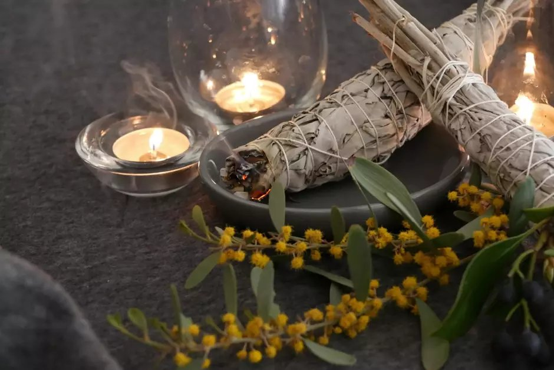
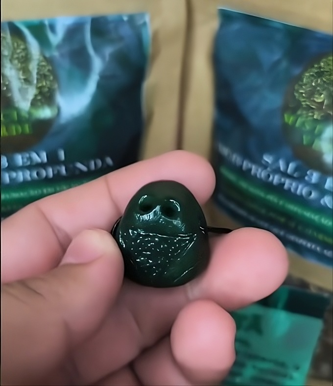
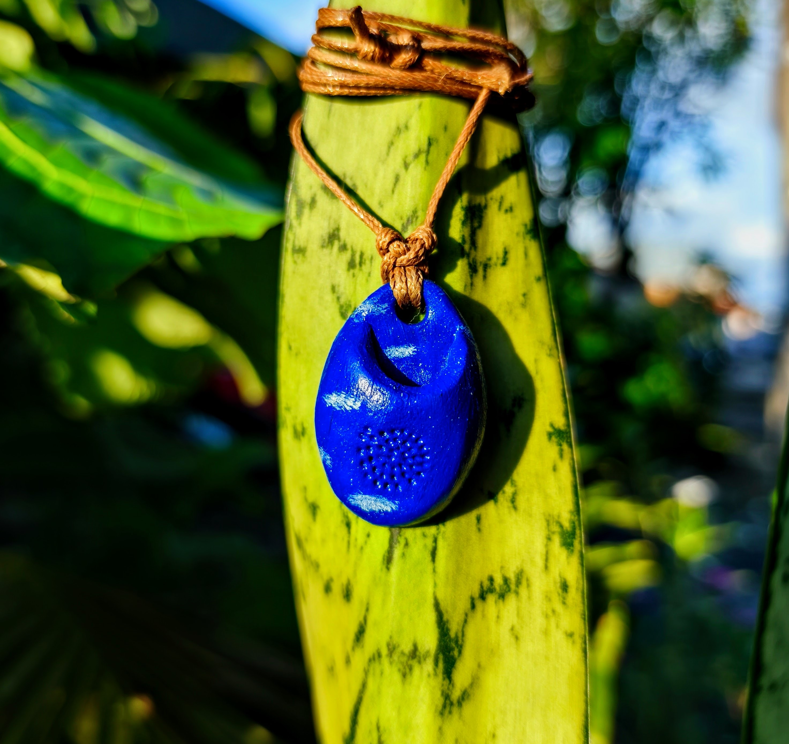

A Jurema e os portais que ela abre: uma jornada pela espiritualidade amazônica
Usada há séculos pelos povos originários do Brasil, a Jurema carrega uma sabedoria que desafia o entendimento racional.
Ler artigo completo →
Como fazer um ritual de limpeza energética da sua casa
Passo a passo com defumação, sal grosso e intenções claras.
Ler artigo →O poder das fases lunares na sua prática espiritual
Alinhe seus rituais e intenções com os ciclos da lua.
Ler artigo →Sinais de que você precisa de uma limpeza energética urgente
Quando a energia fica pesada, o corpo e a alma avisam.
Ler artigo →
Cinco ervas amazônicas que mudam o campo energético
Da arruda ao cipó de alho: o que cada planta tem a oferecer.
Ler artigo →
Muiraquitã: a lenda viva da Amazônia
Um mergulho na lenda, na força simbólica e no valor ancestral do muiraquitã.
Ler artigo →Como reconhecer sinais de absorção energética
Cansaço sem explicação, irritação repentina, peso no corpo e sensação de esgotamento podem ser sinais de que você está absorvendo energias demais.
Ler artigo →
Difusor Pessoal: o ritual de bem-estar que você pode carregar com você
Em um mundo acelerado, o difusor pessoal é um convite à pausa — um gesto simples que transforma o cotidiano em um ritual de autocuidado, equilíbrio e presença.
Ler artigo →
Jiboia Neon: a planta que purifica o ar e renova as energias do lar
Com suas folhas em amarelo-limão vibrante, a Jiboia Neon é muito mais que uma planta ornamental — ela transforma o ambiente, purifica o ar e traz movimento onde há estagnação.
Ler artigo →